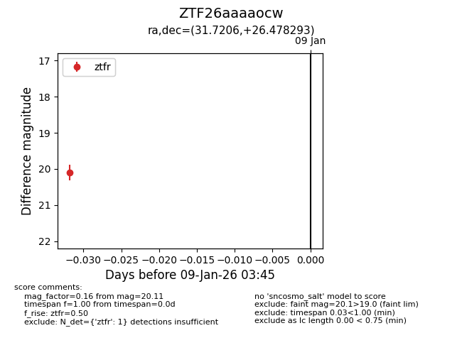
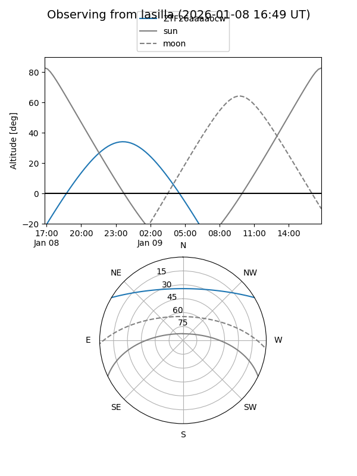
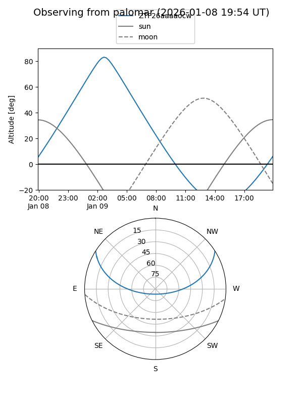

ZTF26aaaaocw
Target ZTF26aaaaocw at 2026-01-09 03:46
Aliases and brokers:
FINK:
Lasair:
ALeRCE:
alt names
ZTF26aaaaocw (ztf,fink_ztf)
Coordinates:
equatorial (ra, dec) = 31.7206,+26.47829
equatorial (HMS+DMS) = 02:06:52.93,+26:28:41.85
galactic (l, b) = (143.2131,-33.40489)
Flags:
Photometry:
last ztfr=20.11
1 ztfr detections
Lightcurve

Visibility


Additional plots